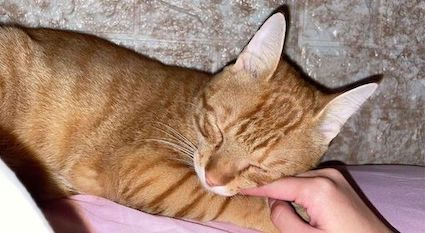
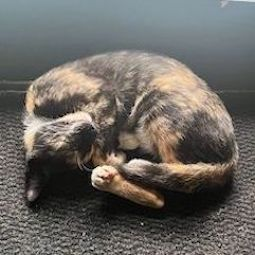
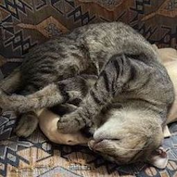

Thinking of getting a cat?
Having a cat can mean different things to different people. Some want a cat to cuddle and sit on their laps; others are happy to live with a very independent cat which spends most of its time outside and doesn’t want too much human interaction. What is important is that you try to find a cat that will interact with you if you want it to.
All cats are not the same and how each individual cat behaves with you can depend on its inherent personality and early experiences (or lack of experiences), which can make it fearful or confident with people and life in general. The environment in which you keep a cat is also extremely significant – for example if it lives with many other cats which do not get on, then it will be stressed and will react differently than if it was on its own. While there is no guaranteed way to choose the perfect cat for you and your lifestyle, understanding your expectations as well as what makes cats tick will help you to bring home a cat that should be able to cope with its new environment and be the pet that you want too.
To care for a cat you will need to:
- Provide plenty of human companionship
- Provide regular, suitable meals with a constant supply of fresh water
- Provide a clean and comfortable bed
- Provide the cat with outdoor access or be prepared to empty and clean a litter tray on a daily basis
- Provide it with a stimulating and safe environment
- Groom it regularly. Longhaired cats require daily grooming
- Have it neutered between 4 and 6 months old
- Vaccinate against the major feline diseases regularly
- Take the cat to the vet when it shows any sign of illness
- Insure your cat or make sure you can afford the cost of any veterinary treatment it may need
How much care and attention does a cat need?
As pets go, cats are relatively low maintenance compared to dogs which need companionship, walking, training etc. However, like any pet, they do need care, and some cats need more care than others. Do you want to spend a lot of time with your cat, do you want it to be demanding, or do you have limited time? Cats can fit into busy, modern lifestyles more easily than dogs, as they are pretty independent, can be left alone much more easily and are more suitable for smaller flats or houses. Cats are often chosen by people who have busy and stressful lifestyles and who want some companionship when they go home to relax.
 